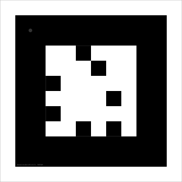

Vision
My Vision systems are using the same ones that were developed for the "Student Robotics". As a bit of a warning I would say that these are by a long stretch the most tricky bit of the kit to get your head around. Therefore unlike the rest of the kit I suggest that before attempting to do this section you aquaint your throughly with how Pythonic lists work and are comfortable using them
The vision system is based around QR-like codes known as "Koki Markers" (see below). Software on the Pi can tell it large amounts of information about the marker including its distance from the camera, its position in 3d space and its rotation etc.
To use Libkoki all you have to do is use the R.see() function, this will take a photo with the Pi Camera and return a list of markers from that picture.
R.see() Function
The R.see() Function has 3 arguments: (Width, Height), Preview and Preview time
(Width,Height) is a tuple and will set the resolution of the camera shot
Preview is a True or False Boolean which tells the function to either display or not display the picture it has just taken on screen
Preview time is how long this preview is on screen for in Seconds.
if left blank (R.see()) it will default to R.see((1280,1024),True,1)
Marker Attributes
The R.see function returns a list, each element of the list is a different marker in the camera's field of view, all markers have a number of attributes as show below:
centre
Technically as measurements in "image" and "world" are taken from the centre, they are attributes of the markers attribute of centre.
image
Attributes
x - This gives the x co-ordinate of the centre of the maker in the image
y - This gives the y co-ordinate of the centre of the maker in the image
Example
markers = R.see((1080,1024),True,1)
for m in markers
print m.centre.image.x
This prints the 2d x co-ordinate of the centre of each markers in the image
world
Attributes
x - This gives the x co-ordinate of the centre of the maker in 3d space, with the camera as (0,0,0)
y - This gives the y co-ordinate of the centre of the maker in 3d space
z - This gives the z co-ordinate of the centre of the maker in 3d space
Example
markers = R.see((1080,1024),True,1)
for m in markers
print m.centre.world.y
This prints the 3d y co-ordinate of the centre of each markers in 3d space, with the camera at 0,0,0.
bearing
Attributes
x - This gives the bearing about the x axis, upwards from level will give a positive angle, downwards from level will give a negative angle
y - This gives the bearing about the y axis, right from straight ahead will give a positive angle, left from straight ahead will give a negative angle
Example
markers = R.see((1080,1024),True,1)
for m in markers
print m.bearing.y
This prints the angle about the y axis at which the centre of each marker is relative to the camera
Rotation
Attributes
x - This gives the rotation of a marker about the x axis axis
y - This gives the rotation about the y axis
z - This gives the rotation about the z axis
Example
markers = R.see((1080,1024),True,1)
for m in markers
print m.rotation.x
This prints the rotation of the marker about the x axis
Others
.distance - Gives the distance from the camera in metres
Example
markers = R.see((1080,1024),True,1)
for m in markers
print m.distance
This prints the distance from the camera to the centre of the marker for each marker
.code - Gives the number encoded into the marker (unique to each marker).
Example
markers = R.see((1080,1024),True,1)
for m in markers
print m.code
.marker_type - Gives the type of marker as a string (MARKER_TOKEN,MARKER_ROBOT,MARKER_ARENA,MARKER_PEDESTAL).
Example
markers = R.see((1080,1024),True,1)
for m in markers
print m.marker_type
This would return what type of marker the marker is